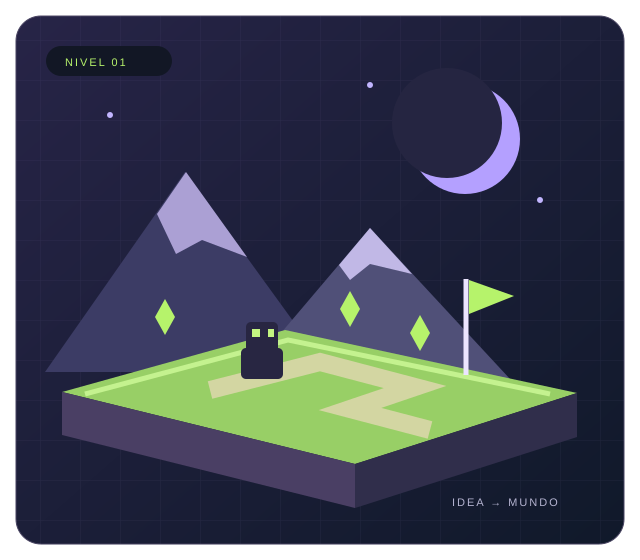

Una idea toma forma
Conoce las etapas: concepto, prototipo, producción, pruebas y publicación.
Ver el proceso →EL JUEGO COMIENZA CON UNA IDEA
Detrás de cada partida hay ideas, arte y código. Descubre cómo se conectan para transformar una primera idea en una experiencia jugable.
DISEÑO · PROGRAMACIÓN · ARTE · SONIDO

EXPLORA EL DESARROLLO
Un recorrido por las decisiones y disciplinas que dan vida a un videojuego.
Conoce las etapas: concepto, prototipo, producción, pruebas y publicación.
Ver el proceso →Descubre para qué sirven los motores, los editores y las herramientas de arte y sonido.
Explorar herramientas →Explora cómo las mecánicas, los niveles, las imágenes y el sonido forman una experiencia.
Conocer los elementos →TU SIGUIENTE NIVEL
Visita las secciones del sitio y descubre qué hay detrás de una experiencia jugable.
Ir a la zona interactiva ↗